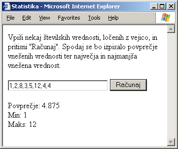

vhod = new Array(1, 1, 0, 3, 5);
for (i = 0; i < vhod.length; i++)
{
izhod[vhod[i]] = vhod[i];
}
Kakšna bo vsebina zbirke izhod, ko se bo zaključil stavek for?
vhod = new Array(1, 1, 0, 3, 5);
for (i = 0; i < vhod.length; i++)
{
izhod[vhod[i]] = i;
}
Kakšna bo vsebina zbirke izhod, ko se bo zaključil stavek for?
str1 = "neki"; str2 = str1 + " še neki";Kakšna bo vrednost izraza str2.length?
obrazec = "UB40"; obrazec = obrazec.toLowerCase();Kakšna bo vrednost spremenljivke obrazec, ko se koda izvrši?
str = "abcdefgh";
pozicija = str.indexOf("cd");
Kakšna bo vrednost spremenljivke pozicija, ko se koda izvrši?
str = "abcdefgh";
pozicija = str.indexOf("CD");
Kakšna bo vrednost spremenljivke pozicija, ko se koda izvrši?
str1 = "otorinolaringolog"; str2 = str1.substring(3,7);Kakšna bo vrednost spremenljivke str2, ko se koda izvrši?
var y = 2.7; x = Math.ceil(y) - Math.floor(y);Kakšna bo vrednost spremenljivke x, ko se koda izvrši?
var y = 3; x = Math.pow(y, 2);Kakšna bo vrednost spremenljivke x, ko se koda izvrši?
var y = -3; x = Math.pow(y, Math.max(y, 0));Kakšna bo vrednost spremenljivke x, ko se koda izvrši?
Izdelajte spletno stran, ki bo omogočala uporabniku, da v polje za vnos besedila vpiše nekaj številskih vrednosti, ki morajo biti ločene z vejicami. Ob pritisku na gumb naj se izračuna srednja vrednost vseh vnešenih števil. Izračunana vrednost naj se skupaj z največjo in najmanjšo vrednostjo izpiše na dnu strani. Za boljšo predstavo spodnja slika prikazuje, kako naj stran izgleda.
Pomoč: iz polja za vnos besedila dobimo podatek v obliki znakovnega niza. Tega najprej s postopkom split() razbijemo na zbirko znakovnih nizev. Pred seštevanjem morate vsak niz posebej pretvoriti v številsko vrednost (s funkcijo parseFloat() ali parseInt()), sicer se vrednosti ne bodo seštele, ampak se bodo zlepile v niz, kakršen je bil na začetku, le brez vejic. Izpis rezultatov dosežete s pomočjo lastnosti innerHTML.